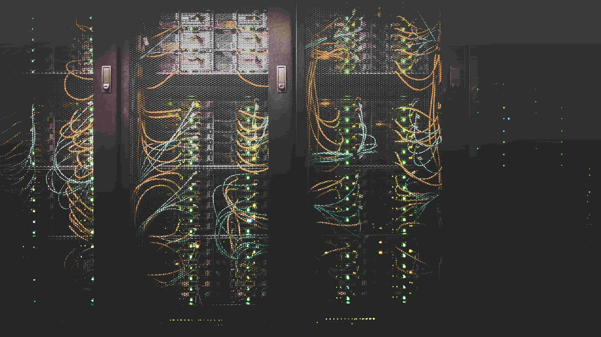

...Klient-servermodellen beskriver hur en server tillhandahåller resurser och tjänster till en eller flera klienter. exempel på servrar inkluderar webbservrar, postservrar och filservrar. När en klient begär en anslutning till en server kan servern antingen acceptera eller avvisa anslutningen. Om anslutningen accepteras upprättar och upprätthåller servern en anslutning med klienten via ett specifikt protokoll..

Internetkommunikation
IP
...En stor del av Internetkommunikation är indetification av en enhet. På internet så använder man sig utav en IP-adress. IP-adresser är i princip identifierare som används för att skicka information mellan enheter och nätverk: De innehåller platsinformation och möjliggör kommunikation mellan enheter. för att urskilja olika datorer, routrar och webbplatser på internet används IP-adresser som en väsentlig del av själva internetstrukturen...
DNS
...DNS, Domain Name System eller domännamnssystem, är enkelt uttryckt ett sätt att förenkla adressering i system som använder ip-adresser - till exempel internet.
För en dator består en adress till en webbsida av ett ip-nummer, Dessa nummer är väldigt svåra att komma ihåg och krångliga att använda. Därför använder vi människor istället textformat för att översätta det vi skriver i webbläsarens adressfält till ip-nummer. Översättningen sköts därefter av en DNS-server hos internetleverantören...
...här kommer en video som förklar hur internet fungerar...
protokoll
...Ett protokoll är ett slags regelverk som används för att två datoret ska kunna förstå varandra. Beroende på vilken information som ska framgå används olika protokoll. Exempel på protokoll är IP,TCP,HTTP,FTP. Alla dessa protokoll hanterar olika typer av information. Ska du tex skicka en bild via internet, så kommer datorn att använda sig utav TCP, det för att dela upp filen i flera paket istället för att skicka all information på en gång. Filerna kommer sedan skickas till den mottagande datorns IP adress där dom sätts samman till 1 fil igen. mer om Http och Ftp kan du läsa i nästa avsnitt...
HTTPS/HTTPS
...HTTP står för Hypertext Transfer Protocol och är ett kommunikationsprotokoll. HTTP-protokollet ser till att det finns en mall för hur filer överförs på webben. Alla webbplatser du besöker lagras på webbservrar. För att du ska kunna besöka en specifik webbsida måste din dator skicka en förfrågan till webbservern där webbplatsen är lagrad, som då kan skicka den efterfrågade filen till dig. S:et i http(s) står för secure. det är alltså en säkrare varient av http.
FTP/FTPS
...Ftp står för file Transfer Protocol och är ett protokoll för filöverföring. protokollet används tex när man laddar upp en fil till en hemsida. S:et står för secure, det vill säga att ftps är en säkrare variant av ftp som är krypterad...